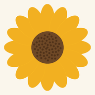
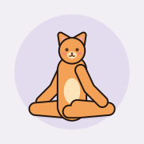
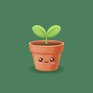

向日葵.世界Sunflower World
Small apps, free for everyone. Open one, put it on your home screen, and use it.
- No ads
- No accounts
- No tracking
- Free
Apps
-

Mat Cat Yoga
A yoga practice made for you, guided on your phone.
-
一步一步 · Step by Step
A Mandarin journey from a language app to the HSK exams, with free practice sets and an Anki deck.
-
Sudoku-Meischter Kimchi
Learn Sudoku the human way, explained by a friendly Swabian teacher.
-
Aletheia
A small picture language for how we experience friendship, grief, joy — compose your own and compare.
-

Gartenapp
A garden companion: 148 plants, bed plans, weather tips and a weekly to-do list.
-
ass-istent
A tennis coach's notebook: groups, players, drills, attendance and training plans. Try the demo with invented players.
-
Opa Rudis Reaktor
My father Rudi's 1978 thesis on a boiling water reactor, explained for his grandchildren and for engineers, and recalculated in 2026.
-
Erzähl mal
My mother Monika's life book: she tells her stories out loud, a gentle companion asks one more question, and every story gets a painted picture.
How to put an app on your home screen
Android (Chrome)
- Open the app.
- Tap the menu ⋮ at the top right.
- Tap “Install app” or “Add to Home screen”.
iPhone (Safari)
- Open the app in Safari.
- Tap the share button □↑ at the bottom.
- Tap “Add to Home Screen”.
About
Hi, I’m Michael. I build small apps with Claude: for my family and friends, and for anyone who can use them.
These days I practise yoga, learn Chinese step by step and work with AI. The work I do makes me still and truthful (like a mirror, or the surface of still water). I wrote a book about that: Aletheia.
Everything here is free and open source. It comes from us and it’s for us.